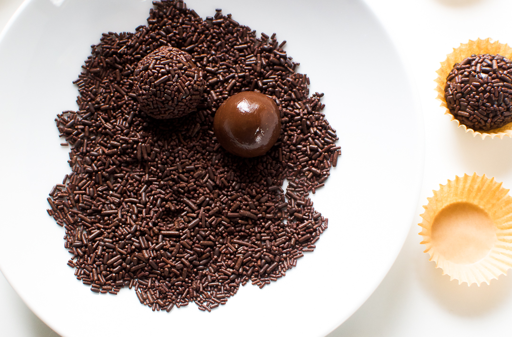

Back
Brigadeiro "Brazilian Fudge Balls"
Brigadeiro (bree-gah-day-ro) is one of the most classic Brazilian desserts. So classic and so Brazilian, it’s safe to say it’s part of the Brazilian DNA. True facts!
These little chocolate caramels are possibly THE most known, most popular and most loved Brazilian party treat. Ask any Brazilian and they’ll confirm…
Brigadeiros are like a Brazilian chocolaty treasure, so sweet and so gooey, it’s impossible not to love.
Ingredients:
- Sweet condensed milk
- Chocolate powder – you know, the kind you add to milk like Nesquik, or Nescau, widely used in Brazil.
- Sprinkles – brigadeiro without sprinkles should be considered a crime!
The recipe is extremely simple, but there are a few little tricks you need to know to ensure your brigadeiro balls come out perfect every time. Check out the deets below!
Steps:
- Combine all ingredients in a saucepan
And cook over medium heat.
- Stir and scrape, stir and scrape, stir and scrape!!
Repeat after me… stir and scrape!!
This is likely the most important advice I can give you. Stirring and scraping during the cooking process, will ensure the brigadeiro doesn’t burn AND that no lumps form. The brigadeiro is ready when you scrape the bottom of the pan and it takes 2-3 seconds for all that gooey mixture to come back to its place, or when the mixture reaches 205F-208F. You can use a candy thermometer, or just a regular food thermometer to check.
- Let it cool
Pour the hot brigadeiro in a plate and let it cool until it’s cool to touch. At that point, you can cover the dish with kitchen wrap to refrigerate and roll later, or you can roll now.
- Roll into balls
Lightly butter your hands, and scoop 1/2 Tbsp to Tbsp size portions and roll little balls – like this!

- Cover in sprinkles!!
Ta-da!! You’re so close. Just roll the little balls in your sprinkles or nonpareil colors of choice and pronto, you are done! You can serve them on a dish, or put them in small little like the ones below.